Chapter 9 Text Annotations
9.1 Introduction
In this chapter, we will learn to add text annotations. There are occassions when you want to display additional information in a plot. This is usually achieved by adding text either inside the plot or on the margins. For example, you might want to label a line/bar or add formulas to better communicate what is shown in the plot. The idea is to use the available space within/outside the plot to provide additional information that can be useful to the end users. We will learn to add text inside as well as on the margins of the plot. This is accomplished using the following two functions:
text(): add text inside the plotmtext(): add text on the margins of the plot
9.3 Text Inside the Plot
To add text inside a plot, the following arguments must be supplied to the text() function:
labels: the text to be displayedx: x axis coordinatey: y axis coordinate
Below is a simple example:
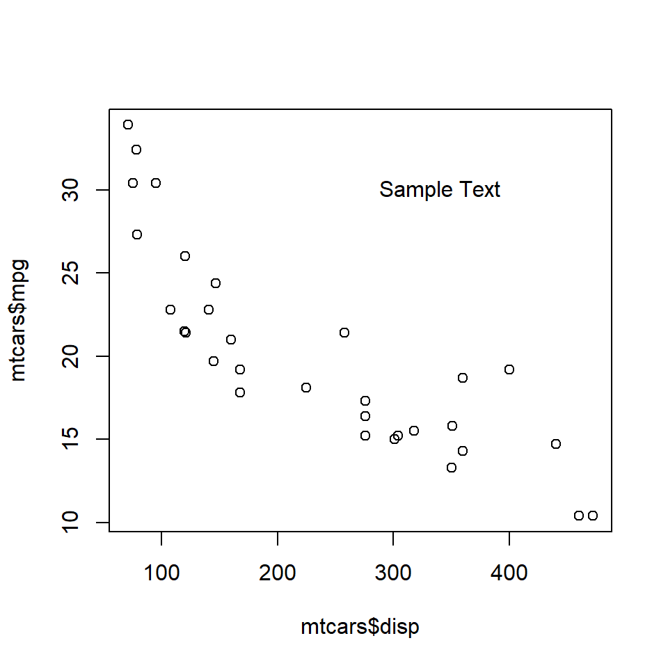
The text appears at the coordinates (340, 30). Ensure that the text is enclosed in single/double quotes and the coordinates provided are within the range of the X and Y axis variables.
9.4 Color
The color of the text can be modified using the col argument in the text() function.
The below plot depicts the appearance of the text for different values of the col argument:
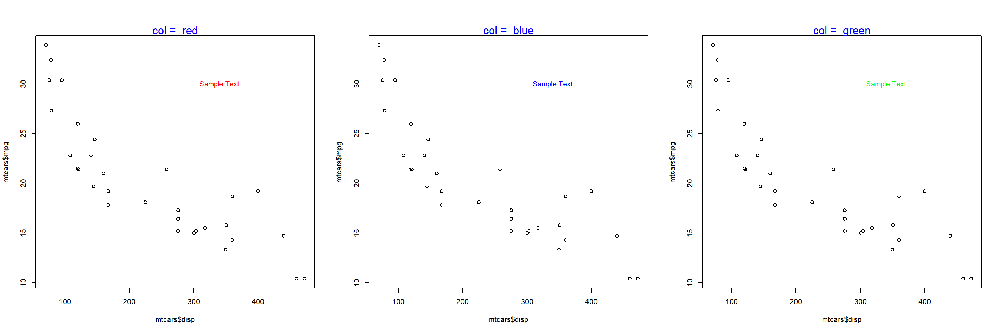
9.5 Font
The font of the text can be modified using the font argument in the text() function.
The below plot depicts the appearance of the text for different values of the font argument:
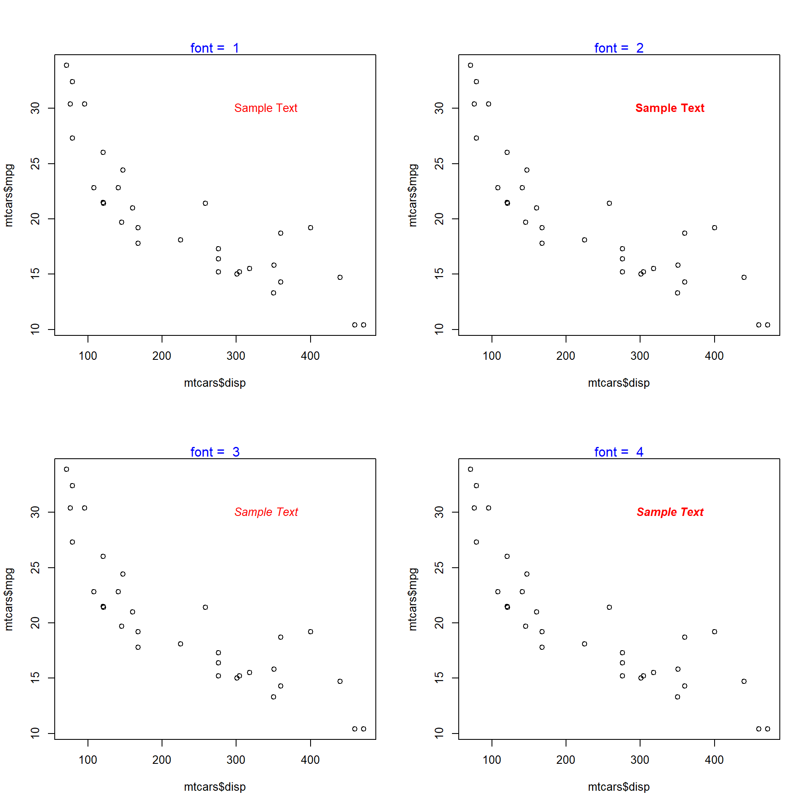
9.6 Font Family
The font family of the text can be modified using the family argument in the text() function.
plot(mtcars$disp, mtcars$mpg)
text(x = 340, y = 30, labels = 'Sample Text', col = 'red', family = 'mono')The below plot depicts the appearance of the text for different values of the family argument:
## Warning in text.default(x = 340, y = 30, labels = "Sample Text", col = "red", :
## font family not found in Windows font database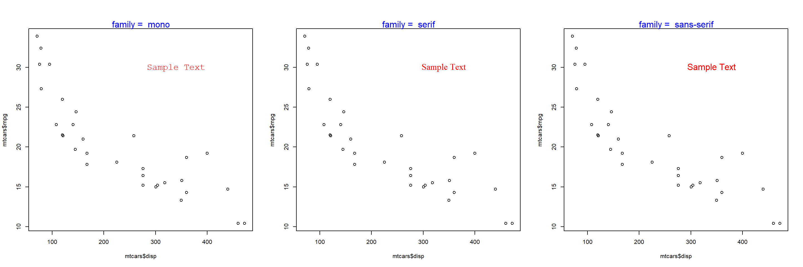
9.7 Font Size
The font size of the text can be modified using the cex argument in the text() function.
The below plot depicts the appearance of the text for different values of the cex argument:
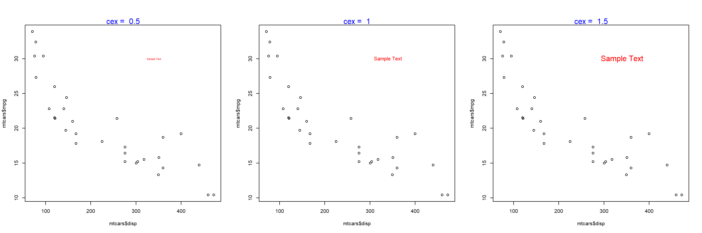
9.8 Text on the Margins
The mtext() function allows the user to place the text on the margins of the plot. It allows the user to modify the location of the text in multiple ways and we will explore them one by one. To beign with, let us add text to the plot using the mtext() function. The minimum input you need to provide is the text itself. Below is a simple example:
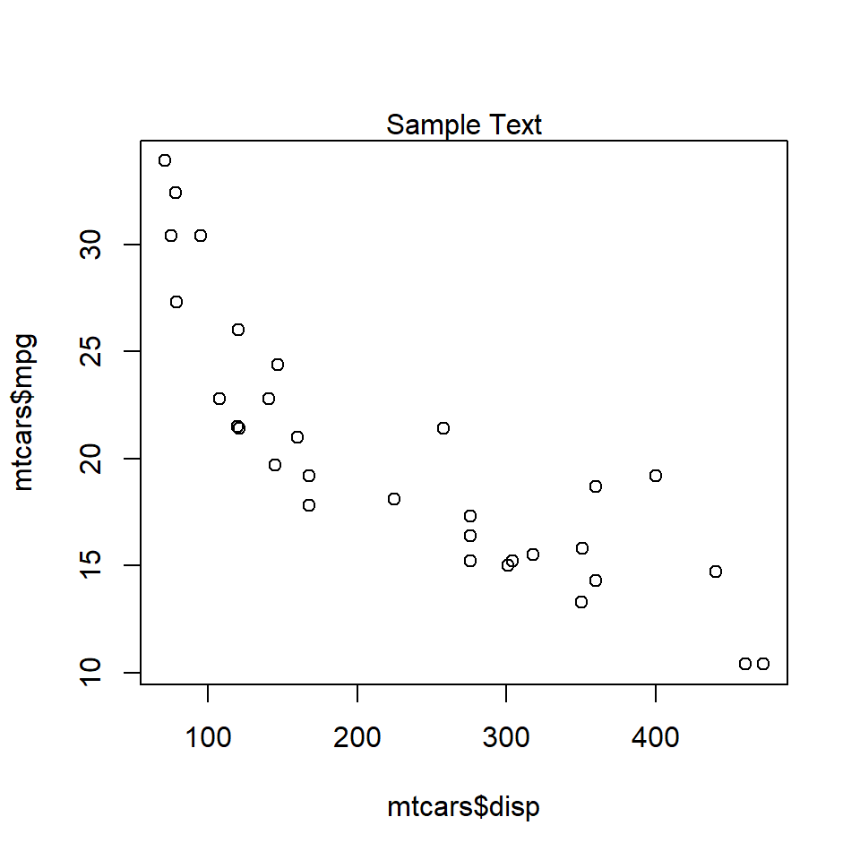
As you can see, the text is placed on the margin of the plot and not inside the plot. Next, we will specify the margin on which to place the text.
9.9 Specify Margin
Use the side argument to specify the margin on which you want to place the text. If takes values 1 to 4, each representing one side of the plot.
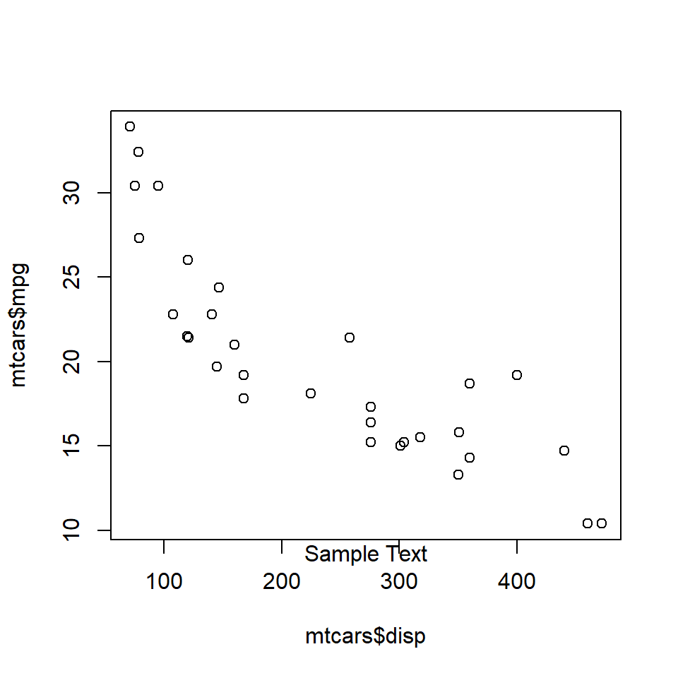
The below plot displays the appearance of the text when differnt options for side argument are supplied:
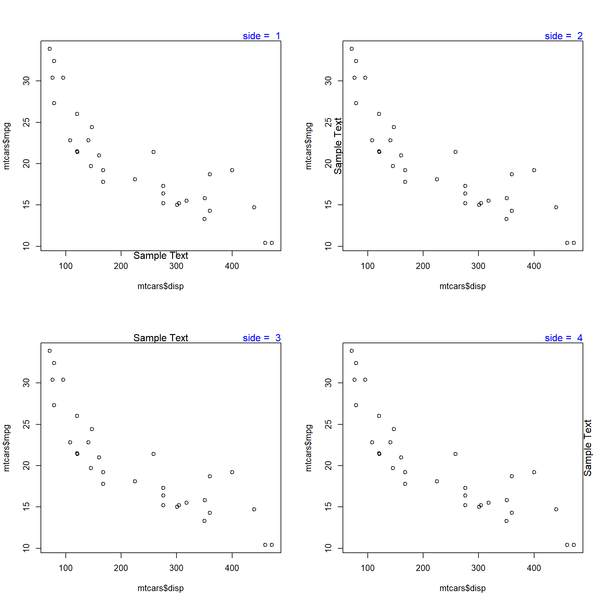
9.10 Line
The line argument places the text at a specified distance from the margin. The default value is 0. As the value increases, the text is placed farther from the margin and outside the plot. As the value decreases, the text is placed inside the plot and farther from the margin. Below is a example where the text is placed outside the plot as the value is greater than 1.

When the value is less than 0, the line argument places the text inside the plot.
The below plot displays the appearance of the text when different values are supplied to the line argument:
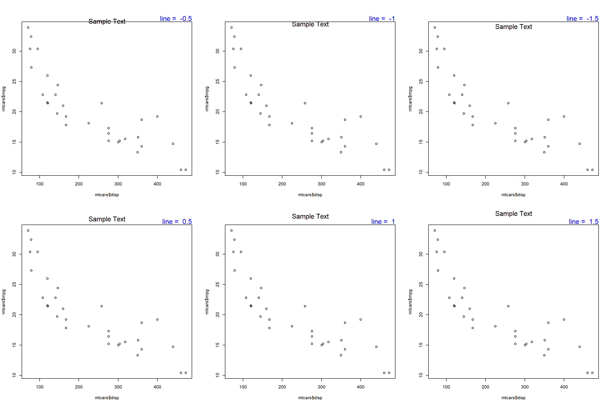
9.11 Alignment
The adj argument is used for horizontal alignment of the text. It takes values between 0 and 1. If set to 0, the text will be left aligned and at 1, it will be right aligned. Below is a example where the text is left aligned as adj is set to 0.
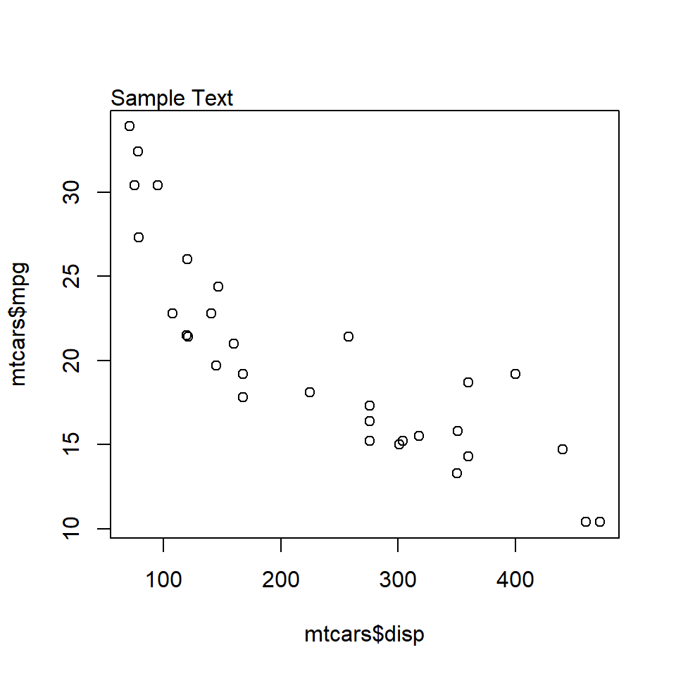
When the value is set to 1, the text is right aligned.
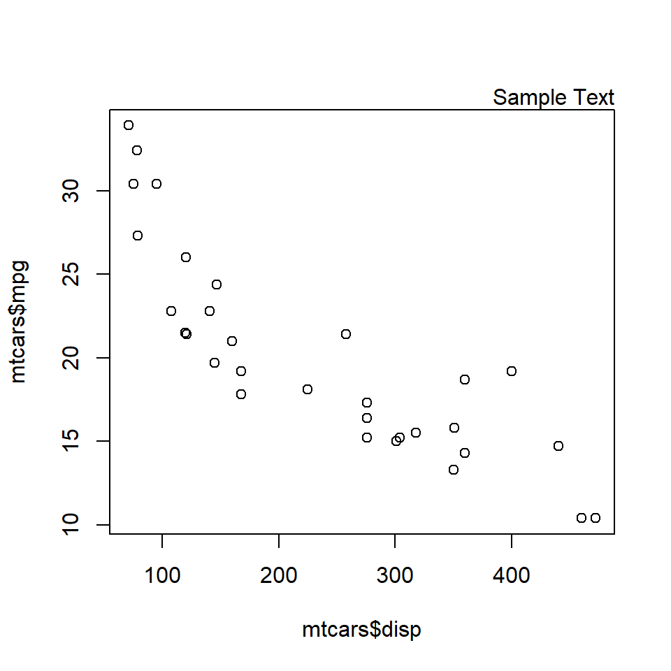
The below plot displays the appearance of the text when different values are supplied to the adj argument:

9.12 Position
The pos argument of the text() function places the text relative to the specified coordinates without needing adj. It takes values 1 to 4, each representing a position around the point:
1: below2: to the left3: above4: to the right

9.13 Offset
The offset argument of the text() function controls how far the text is placed from the coordinates when pos is used. The distance is measured in character widths and the default value is 0.5.

9.14 Perpendicular Adjustment
The padj argument of the mtext() function fine-tunes the placement of the text in the direction perpendicular to adj. It takes values between 0 and 1. Compare the two plots below and observe the nudge:

9.15 Outer Margin
By default, mtext() places text on the inner margin of the current plot. Set outer = TRUE to place the text on the outer margin of the whole figure region instead. This is useful with multi-panel layouts, but first reserve outer space with par(oma = ...):
init <- par(no.readonly = TRUE)
par(oma = c(0, 0, 3, 0))
plot(mtcars$disp, mtcars$mpg)
mtext('Outer Margin Text', outer = TRUE)